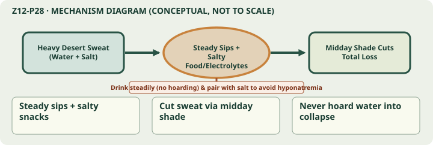

Z12-P28 · Extreme environments · New manuscript
Manage desert hydration, salt/electrolyte balance and water-rationing myths
Drink safe water steadily paired with salty food to prevent both severe dehydration and dangerous low-sodium hyponatremia.
When it applies · Prolonged hot-weather exertion, desert marches and high-sweat emergency work.
Equipment · Verified potable water, salty snacks or oral rehydration packets and urine/symptom self-check awareness.

Actions
- Drink safe water steadily to thirst and sweat loss rather than hoarding water in your pack until faint—rationing water while dehydrating impairs judgment and accelerates fatal heat stroke ("drink your water, don't carry it into collapse").[X07, E08, T05]
- Pair high water intake during long hot exertion with regular salty snacks or balanced electrolyte solutions—guzzling huge volumes of plain water over many hours without replacing lost sodium can trigger dangerous hyponatremia (nausea, headache, swelling, confusion).[X07, E08, ED]
- Cut water loss dramatically by stopping midday exertion, resting in shade and keeping mouth closed/breathing calmly rather than trying to find questionable desert plant juices (most cacti/desert plants cause vomiting and worse dehydration).[X07, E08, W01]
Failure recognition · Hoarding two full liters in a backpack until collapsing from heat stroke, OR forcing gallons of plain water with zero food/salt until confused and vomiting.[X07, T05, E08]
Verify · Confirm steady safe drinking matched to exertion, regular salty snack intake and strict avoidance of midday heat effort.[X07, E08, ED]
Stop or change course · Persistent vomiting, inability to keep fluids down, confusion, staggering or fainting requires stopping immediately in shade, cooling and calling 911.[T05, T09, T02]
Evidence and editorial notes
- E08 · CDC · About Heat and Your Health (current web edition)
- Section: Protect yourself from heat · Conditions: Outdoor activity in hot conditions
Support: Limit exertion in hot periods, take breaks in cooler places and monitor for illness.
Limitations: High humidity reduces sweat evaporation and raises heat strain at lower air temperatures. · Conflicting evidence: None; aligns with NWS-HEAT and NIOSH-H.
Editorial note: Anchors shade, pacing, and hot-weather shelter selection. · Specialist reviewer: Heat illness and emergency medicine
Primary source · checked 2026-11-24 - T02 · American Red Cross · First Aid Steps (current web edition)
- Section: First Aid Steps > Call 9-1-1 · Conditions: Lay emergency response to unresponsiveness, abnormal breathing or severe bleeding
Support: Activate EMS and get needed equipment. Follow dispatcher directions and act within training.
Limitations: Remote locations may delay EMS arrival, requiring sustained stabilization after activation. · Conflicting evidence: None; aligns with NPS-E.
Editorial note: Mandates early emergency activation and dispatcher adherence. · Specialist reviewer: EMS and wilderness medicine
Primary source · checked 2026-11-24 - T05 · CDC NIOSH · Heat-related Illnesses (current web edition)
- Section: Heat stroke > First aid · Conditions: Heat exposure and altered mental status
Support: Heat illness may be life-threatening. Seek emergency care for suspected heat stroke and start cooling promptly.
Limitations: Delays in active cooling worsen neurologic outcomes. · Conflicting evidence: None; aligns with CDC-HEAT.
Editorial note: Core heat-emergency escalation rule. · Specialist reviewer: Emergency and wilderness medicine
Primary source · checked 2026-11-24 - T09 · CDC NIOSH · Heat-related Illnesses (current web edition)
- Section: Heat stroke > Symptoms and First aid · Conditions: Suspected heat stroke after exertion or heat exposure
Support: Confusion, slurred speech or loss of consciousness can indicate heat stroke. Call 911 and cool the person promptly.
Limitations: Exertional heat stroke can occur even in moderate ambient temperatures during heavy effort. · Conflicting evidence: None; aligns with T05.
Editorial note: Triggers immediate emergency call and cooling stop condition. · Specialist reviewer: Emergency and wilderness medicine
Primary source · checked 2026-11-24 - W01 · CDC · How to Make Water Safe in an Emergency (2024-09-19)
- Section: Water with fuel or toxic chemicals in it · Conditions: Suspected fuel, toxic chemicals or radioactive contamination
Support: Use a different safe supply. Standard boiling and microbial disinfection do not make this water safe.
Limitations: Does not list contaminant-specific lab remediation; applies to emergency consumer decisions only. · Conflicting evidence: None across CDC/EPA emergency guidance.
Editorial note: Used as upstream hard-stop gate prior to any field treatment card. · Specialist reviewer: Drinking-water safety and public health
Primary source · checked 2026-11-24 - X07 · NPS · Death Valley Safety (Desert Travel and Heat) (current web edition)
- Section: Death Valley Safety > Desert Heat, Dehydration, Flash Floods and Vehicle Breakdown · Conditions: Arid desert travel, canyon country and extreme summer heat
Support: Desert heat accelerates fluid and electrolyte loss rapidly, temperatures inside parked vehicles spike to fatal levels within minutes, dry washes flash-flood from distant storms and staying with a disabled road vehicle is generally safer than walking into extreme heat.
Limitations: Cell service is widely absent across desert basins; water needs can exceed 1 gallon/day dramatically during heat. · Conflicting evidence: None; aligns with CDC-HEAT and NWS-HEAT.
Editorial note: Core desert-environment evidence across Z12 heat/arid cards. · Specialist reviewer: Desert safety and emergency medicine
Primary source · checked 2026-11-24
Source lineage · NPS desert safety and CDC heat; new manuscript · Classification · New manuscript.